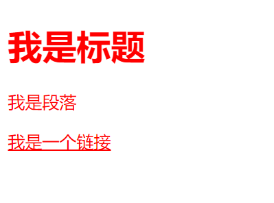

原文出处:本文由博客园博主心悦君兮君不知-睿提供。
原文连接:https://www.cnblogs.com/ruigege0000/p/11241750.html
原文连接:https://www.cnblogs.com/ruigege0000/p/11241750.html
一、通配符选择器
作用：给当前页面上所有的标签设置属性
（2）格式：
*{属性：值；}
（3）注意点：由于通配符选择器是给界面上所有的标签设置属性，因此在设置之前会遍历所有的标签，如果当前界面上的标签比较多，那么性能就会比较差，所以一般在企业开发过程中一般不会使用通配符选择器。
（4）例子：
*{
color: red;
}
........省略代码.......
<h1>我是标题</h1>
<p>我是段落</p>
<a href="#">我是一个链接</a>

二、选择器综合练习
下面的这些方法都可以对p标签进行属性的设置
没有最好的方法，只有更合适的做法，对之前学习的选择器都练习了一遍
<!DOCTYPE html>
<html lang="en">
<head>
<meta charset="UTF-8">
<title>d82_selector_comprehensive_exercise</title>
<style>\
/*标签选择器*/
p{
color: red;
}
/*id选择器*/
#identity1{
color: green;
}
#identity2{
color: green;
}
/*class选择器*/
.para{
color: blue;
}
/*后代选择器*/
div p{
color: yellow;
}
/*子元素选择器*/
div>p{
color: red;
}
/*交集选择器*/
p.para{
color: green;
}
/*并集选择器*/
#identity1,#identity2{
color:wheat;
}
/*通用兄弟选择器*/
h1~p{
color: #37fa1e;
}
/*序选择器*/
p:nth-of-type(n+1){
color:green;
}
/*属性选择器*/
p[id]{
color: #ff4b54;
}
</style>
</head>
<body>
<h1>我是标签</h1>
<div>
<p id="identity1" class="para">我是段落1</p>
<p id="identity2" class="para">我是段落2</p>
</div>
</body>
</html>
三、源码：
d81_wildcard_selector.htm
d82_selector_comprehensive_exercise.html
地址:
https://github.com/ruigege66/HTML_learning
2.CSDN：https://blog.csdn.net/weixin_44630050（心悦君兮君不知-睿）
3.博客园：https://www.cnblogs.com/ruigege0000/
4.欢迎关注微信公众号：傅里叶变换，后台回复“礼包”获取Java大数据学习视频礼包